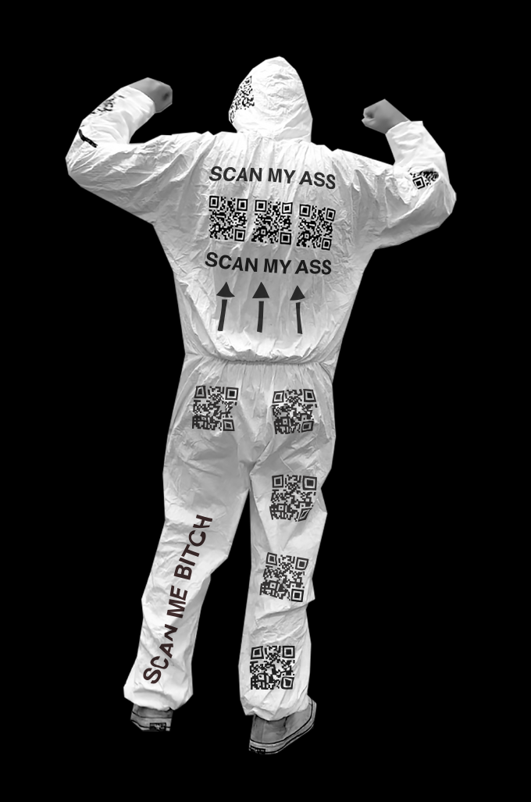
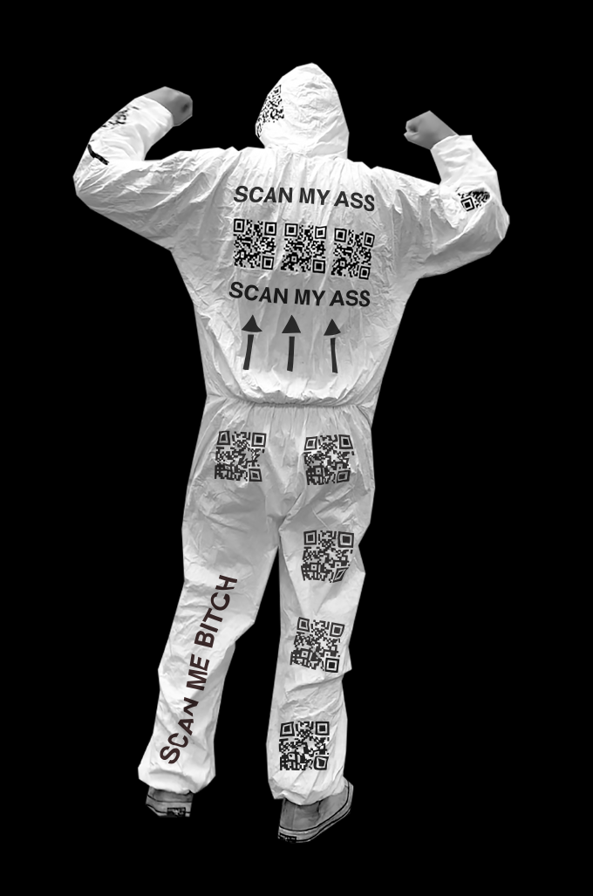

Challenge
My first project in the RISD Graphic Design department was a class wide competition between twelve
groups of four to promote an assigned QR code. The instructions were to put up our QR codes around
campus and whichever group received the most scans on their assigned code won. The only constraint was a
maximum of 30 8.5 x 11 prints to promote each group's code. Every team had an identical product, the
question was: what surroundings and placement would lead to the most scans?
Solution
During planning, we assumed that most groups would follow the traditional path of product promotion:
print 8.5 x 11 posters that hung on walls with clever or deceiving lines about why passer-bys should
scan the code. The similarity and conventionality of the approaches presented an opportunity. Instead of
competing on the same cluttered turf as everyone else, we would expand the turf by displaying our QR
codes, not just elsewhere, but in a more sensational fashion than a conventional poster could
accommodate. (Our audience was an art school after all).
Our team inquired about putting the codes on surfaces other than paper. We were approved as long as our
print of the code itself did not exceed 8.5 x 11.
We explored many possibilities—pasting vinyl sticker cutouts in urinals or printing on kites that would
fly above campus—finally arriving at a kind of absurd QR code mascot/superhero that we thought would
play best with our audience. The initial concept following this was to print or paint the codes onto
someone's body and have them run around campus in their underwear stirring up a ruckus (something
between a Bay to Breakers runner, Duff Man, and The Freeze). We wanted the character to burst on to the
campus conscience in conversation and social media. "Have you seen the naked qr code guy?" was the dream
line. Unfortunately, we found that applying the codes to skin proved too challenging for our time frame
and instead opted to apply the code to disposable coveralls using vinyl stickers. Although slightly less
sensational than the naked mascot, the suits still captured most the desired effect and managed to draw
a crowd upon entering lectures, dining halls, and weekend festivities.


 
